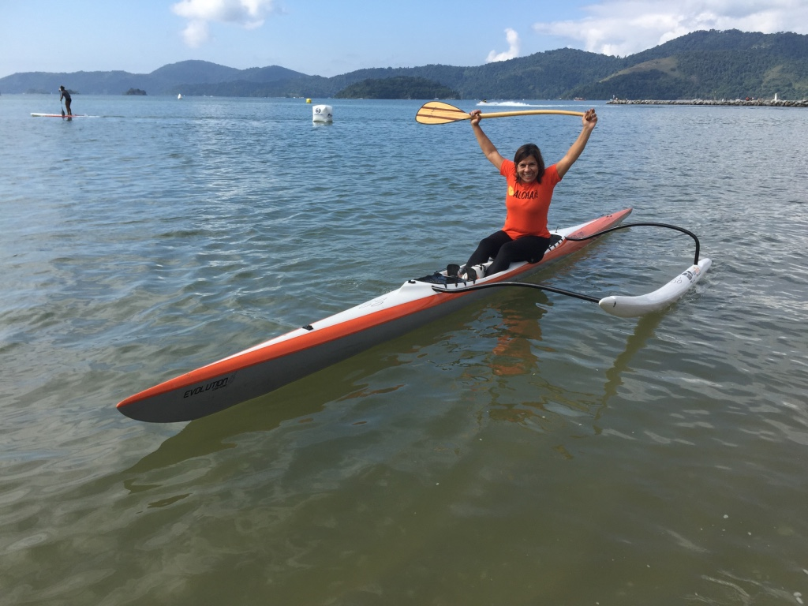
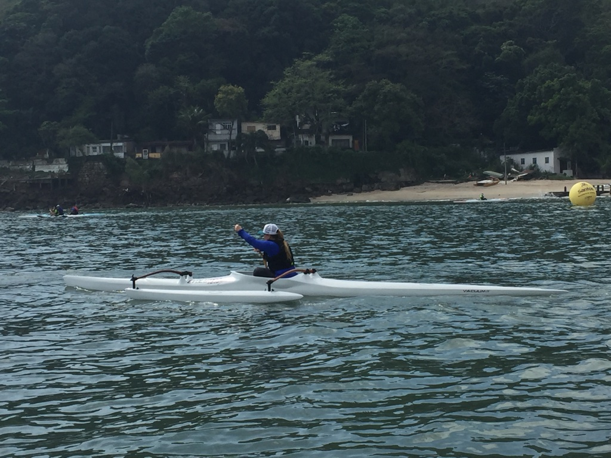
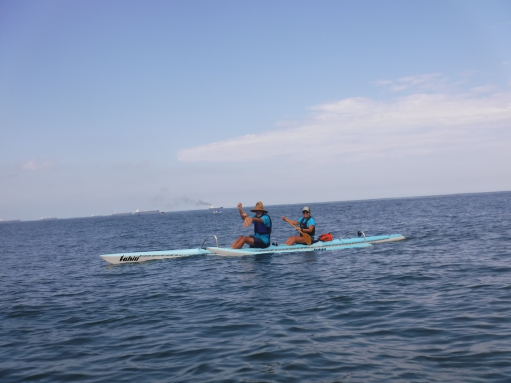
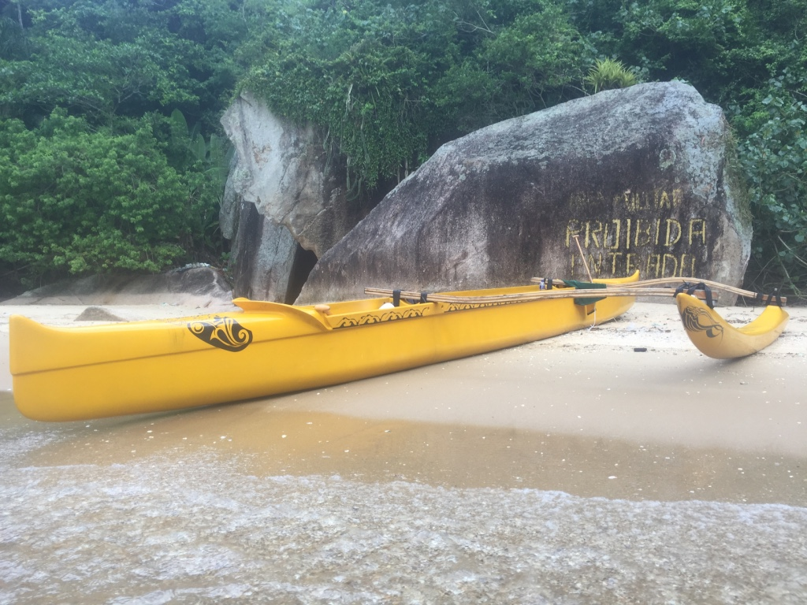
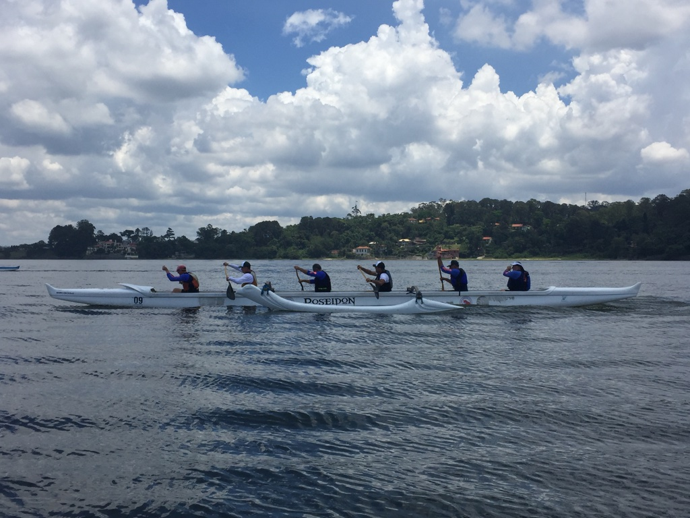
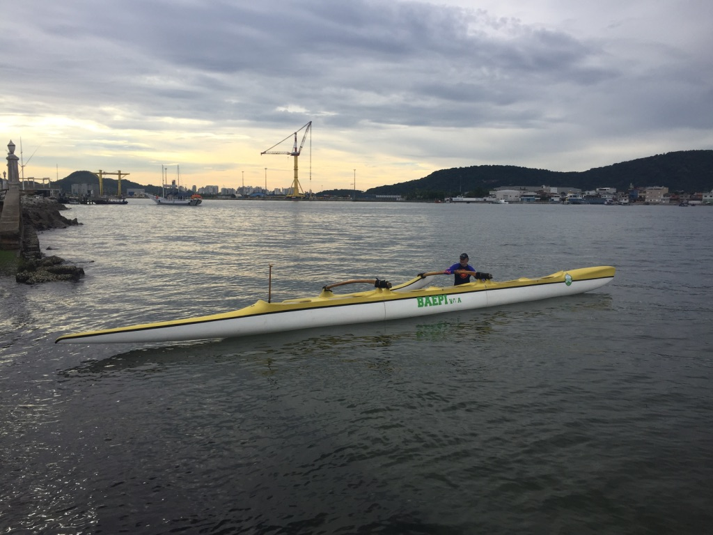

Tipos de Canoas Havaianas
OC1
A Canoa OC1 é composta de corpo, iakos, ama, pedais que controlam o leme e o leme que fica submerso. A OC1 é instável e pode virar em um momento de oscilação do mar, vento ou se o remador se desequilibrar. O ato de virar é chamado de "huli"". 
V1
A V1 assim como a OC1 é uma canoa polinésia para um remador. V1 está ligada a cultura taitiana, a OC1 a cultura havaiana, a estrutura de ambas são semelhantes, porém a V1 não possui leme e tem um cockpit que acomoda o remador no seu interior.
OC2
A OC2 é uma canoa para dois remadores, composta de corpo, iakos, pedais,ama e o leme que fica submerso. Também é uma canoa instável.
OC4
A OC4 é uma canoa para quatro remadores, composta de corpo, iakos e ama não possui leme. Também são utilizadas para prática de surf.
OC6
Os principais modelos de canoas são OC6 e V-6, muitas vezes referidas de forma equivocada como se fossem a mesma embarcação. A OC6 é a canoa polinésia para 6 pessoas medindo cerca de 14 metros com 50 centímetro de largura, pesando aproximadamente 150Kg, originada das embarcações utilizadas nas ilhas que compõem o arquipélago do Hawai.
A V-6 é o modelo de canoa para 6 pessoas utilizada no Taiti e toda a Polinésia Francesa. OC remete à expressão em inglês "Outrigger Canoe", largamente utilizada no Hawai'i, enquanto que "V" deriva de Va'a, nomenclatura das canoas no idioma polinésio.
V6
Catamarã e Trimarã
Quanto juntam-se duas ou três canoas com os Iakos, sem o Ama, denomina-se como catamarã ou trimarã e geralmente é utilizado para aulas nas bases podendo levar de 10 até 18 pessoas remando.